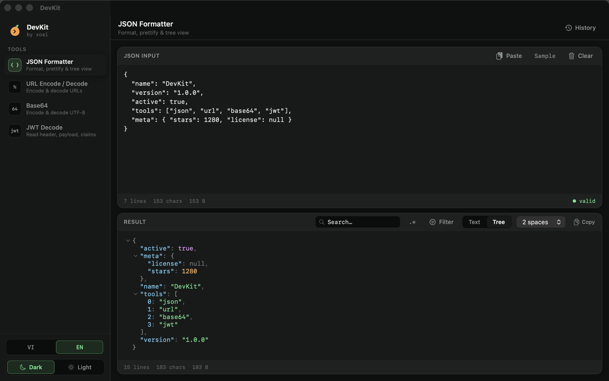
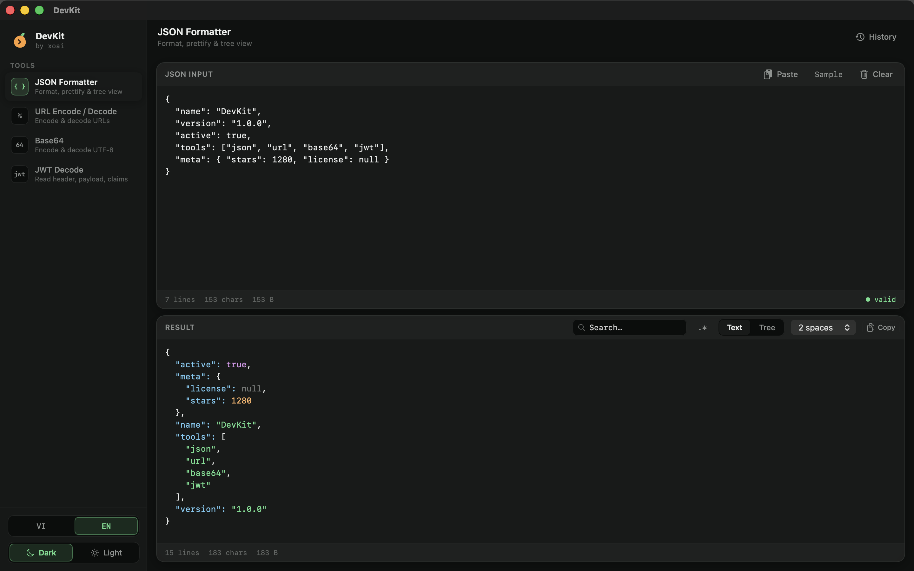
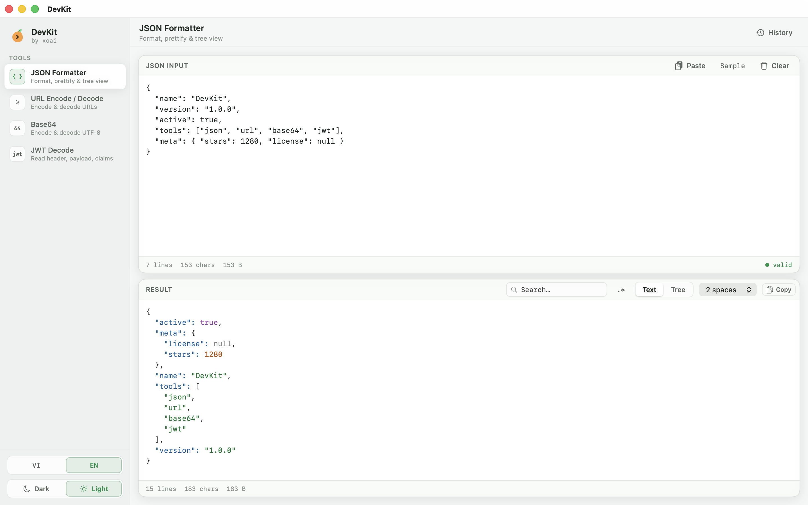
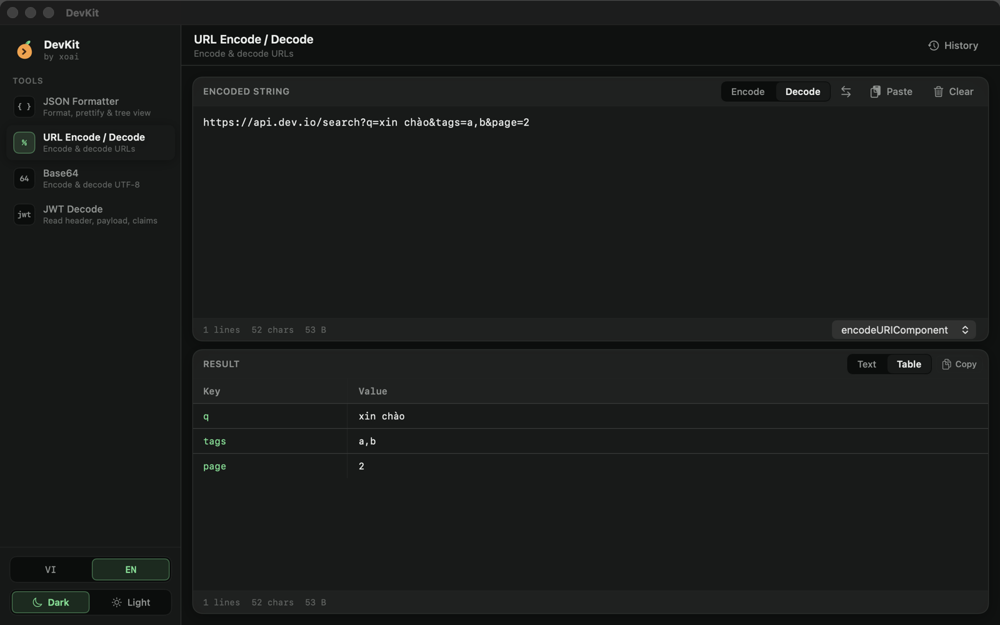
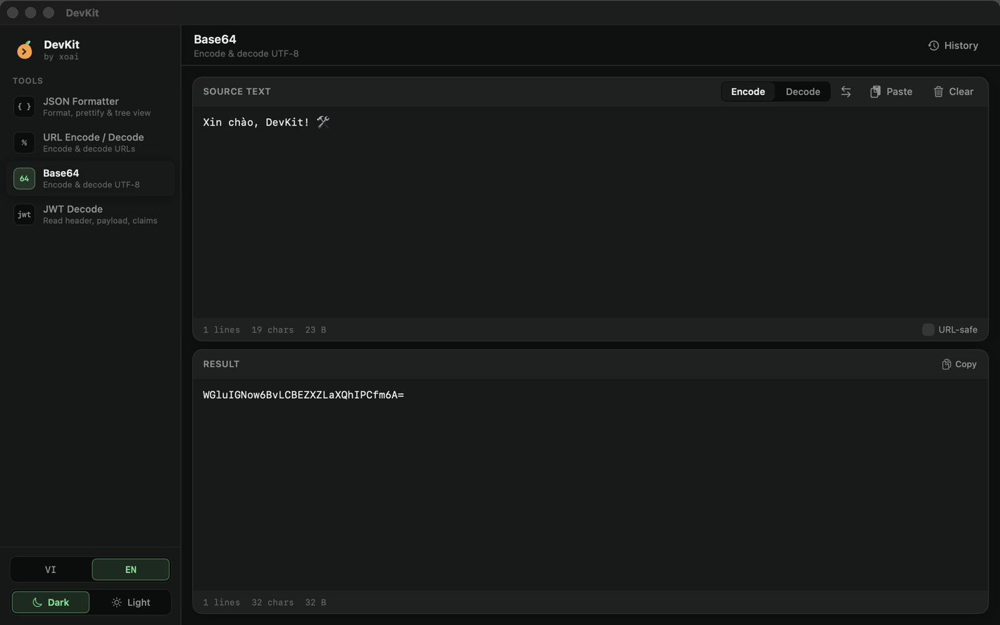
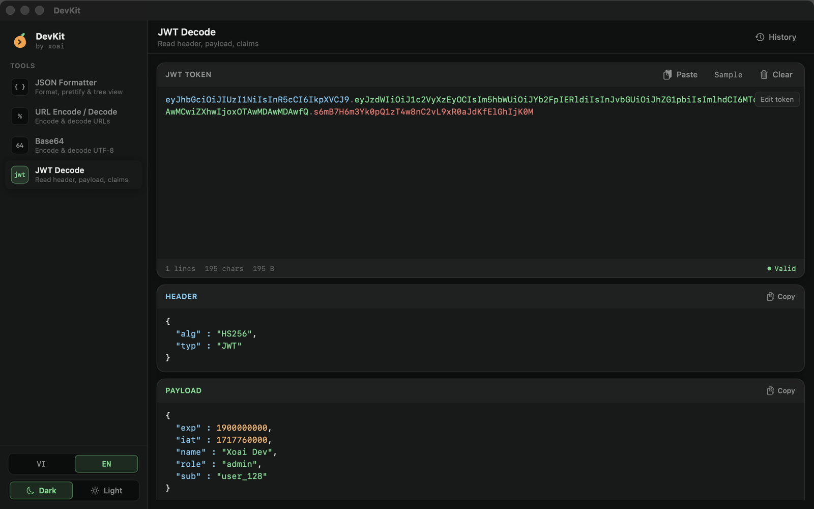

JSON Formatter
JSON Formatter
Format and prettify with 2-space, 4-space or tab indent, explore a collapsible tree, and search. Numbers keep their full precision.
A fast, native developer toolkit for macOS — JSON, URL, Base64 and JWT in one app.



Format and prettify with 2-space, 4-space or tab indent, explore a collapsible tree, and search. Numbers keep their full precision.

Percent-encode and decode in one click. Flip to Table view to read query parameters as a key/value list.

Encode and decode UTF-8 text, emoji and all.

Inspect a token's header, payload and signature, with claims shown in a readable form.
Recent inputs are saved per tool. Click one to load it back.
Switch themes anytime.
Built with SwiftUI. Works offline, no tracking.
The whole interface is fully localized.